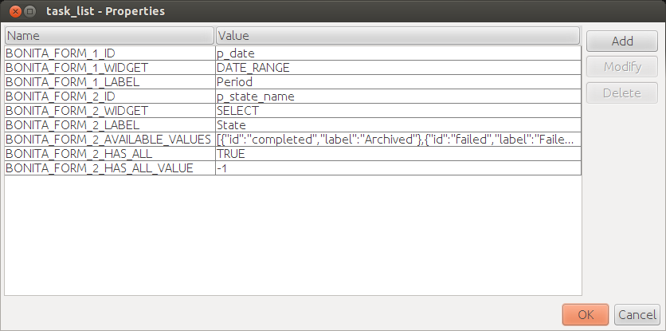

Create a report
The final step when setting up reporting in Bonita is to create a report template using a Business Intelligence (BI) tool.
NOTE: Note: For Enterprise, Performance, Efficiency, and Teamwork editions only.
Prerequisites
You are free to choose any BI tool to do so, but if you want to display reports inside the Bonita Portal you should design your reports using one of the following tools:
-
JasperReports iReport Designer - Older stable tool in maintenance mode
-
Jaspersoft Studio - Newer tool
Bonita integration guidelines and tips for Jasper reports
This documentation does not detail the use of Jaspersoft Studio but provides some guidelines for report integration in Bonita Portal. There are minor differences depending on which Japsersoft tool you are using, but these concern the user interface of the Japsersoft tools, not the Bonita behavior. For details about the use of the Jaspersoft products, please refer to their documentation:
Change the script language to Java
By default Jasper reports use Groovy as a script language. However, Bonita Portal does not provide Groovy dependencies to the report so you need to switch the report script language to Java.
This is how to do this for iReport:
-
In the Report inspector tree located on the left-hand side, select the root element.
-
In the properties table located on the right-hand side, locate the Language property and change it to Java.
Access Bonita database
If you build a report that requires access to the Bonita database, you need to add the Bonita SQL Query Executor as a report dependency. All queries that fetch Bonita Engine data must use this query executor.
This is how to add the query executor as a report dependency in iReport:
-
Open the Tools menu and select Options.
-
Make sure the iReport header is selected.
-
Select the Query Executers tab.
-
Click on the Add button.
-
Fill the form using the following values:
Field Value Language
BONITASQL
Factory class
org.bonitasoft.JRBonitaJdbcQueryExecuterFactory
Fields Provider class (optional)com.jaspersoft.ireport.designer.data.fieldsproviders.SQLFieldsProvider
-
Click on OK.
-
Still in the Options window, select the Classpath tab.
-
Click on Add JAR.
-
Browse to your Bonita Studio installation directory and navigate to
workspace/tomcat/webapps/bonita/WEB-INF/lib/. -
Select the
console-server-sp-X.Y.Z.jarfile, whereX.Y.Zis the Bonita version. -
Click on Open.
Add interactivity with Bonita Portal to your report
When creating a report you may need to enable Bonita Portal users to interact with it. Bonita Portal integration of the Jasper report viewer makes interactivity possible by providing widgets that can control report parameters. Widgets are configured directly in the Jasper report as properties.
Here is the sequence of events when an interactive Jasper report is displayed in Bonita Portal:
-
Bonita Portal reads the report properties and generates an HTML form containing the widgets.
-
The HTML code is injected as a report parameter by Bonita Portal.
-
The report renders the HTML code using the parameter.
-
The end-user can then interact with the widgets and the report is automatically re-generated if a value changes.
To enable interactivity, the first thing to do is to prepare the HTML form rendering parameter and component.
This is how to do this in iReport:
-
In the Report Inspector tree, right click on Parameters and select Add Parameter.
-
In the parameter properties, update the Name property to
BONITA_HTML_FORM. -
Drag and drop an HTML component from the Palette onto your report’s Title section.
-
Select the HTML component that you have added.
-
In the component properties, set the HTML Content Exp. property to
$P{BONITA_HTML_FORM}.
When the HTML form rendering parameter and component are ready, you need to set the report properties to configure the widgets that your report will integrate.
All widgets share the following mandatory properties (XXX is replaced by a number used to identify the widget):
| Property | Mandatory | Description |
| BONITA_FORM_XXXID | Yes | Base name of the report parameter that will be updated with the widget value. Special rules apply depending on the widget type (see next parameter):
|
| BONITA_FORMXXXWIDGET | Yes | Widget type. Can be one of the following:
|
| BONITA_FORMXXX_LABEL | Yes | Widget label |
The SELECT widget has the following extra properties:
| Property | Mandatory | Description |
| BONITA_FORM_XXXAVAILABLE_VALUES | Yes: one of these two properties is required | Static list of available values defined in a JSON format. Example: |
| BONITA_FORMXXXQUERY | Query that dynamically retrieves the list of available values from the Bonita database. | |
| BONITA_FORMXXXHAS_ALL | No | Set this to TRUE if you wish to dynamically add an "All" item to the list of available values. Otherwise, ignore this property. |
| BONITA_FORMXXX_HAS_ALL_VALUE | Only if the "All" item is active | Specifies the value returned when the "All" item is selected. |
Specifies the value returned when the "All" item is selected.
The DATE and DATE_RANGE widgets have the following extra properties:
| Property | Mandatory | Description |
| BONITA_FORM_XXXINITIAL_VALUE | Yes: one of these two properties is required | Static initial value defined in the ISO format for the DATE widget Example: 2015-01-28Static initial values for _from and _to parameters in the ISO format separated by ` - ` for the DATE\_RANGE widgetExample: 2015-01-28 - 2015-02-28 |
| BONITA_FORMXXX_QUERY | Query that dynamically retrieves the initial value from the Bonita database. |
For a DATE_RANGE widget, if you name the associated parameter p_date then p_date_from and p_date_to initial
value will automatically be set to one week before today and today respectively. Setting an initial value to this
parameter using BONITA_FORM_XXX_INITIAL_VALUE will not be taken in account.
Query that dynamically retrieves the initial value from the Bonita database.
Create the report properties using iReport as following:
-
In the Report Inspector tree, right click on the report’s name and select Properties.
-
In the More section, configure Properties by clicking on …
-
Add the properties based on the widgets you need.
Here is an example of a report configuration containing a "Period" date range and a "State" select widget: 
Add style to HTML rendered report
To change style of your components in the HTML rendered reports, add CSS classes to them and update global Look’n’feel as described in Bonita portal look’n’feel page.
|
+
Note: If a JRTX file has been packaged inside the imported zip file, it will not be used to style HTML generated reports. Using the global CSS look’n’feel of the Bonita Portal allows to have a consistent look’n’feel between HTML reports and Bonita Portal. |
To add a CSS class to a component proceed as follow:
-
In the Component properties pane, click the Properties expression button
-
Add a Properties expressions:
-
Set Properties expressions's name to net.sf.jasperreports.export.html.class
-
Set Properties expressions's value to the wanted CSS class.
-
Then, implement in Bonita Portal’s look’n’feel the expected style for this CSS class.
Alternatively, you can also change the HTML tag name of a component by adding a new Property in Properties expressions named net.sf.jasperreports.export.html.tag (example: name: net.sf.jasperreports.export.html.tag value: h1)
Package a report for Bonita Portal integration
In order to integrate a Jasper report in Bonita Portal, you need to prepare a ZIP archive.
The archive should contain at least the compiled Jasper report (a file with a .jasper extension).
If your report requires a connection to the reporting database, the archive must contain:
-
The JDBC driver jar file used to connect to the reporting database. Do not include this file in the archive if the driver is already deployed at server level.
-
A connection.properties text file that contains the reporting database connection settings:
Property Description dbUrl
JDBC Url to access the reporting database
dbDriverClassName
The JDBC driver’s class name
dbUser
The login of the database user
dbPassword
The password of the database user
For example, connecting to a local MySQL database named BonitaReport with a user root and password root:
dbUrl=jdbc:mysql://localhost:3306/BonitaReport dbDriverClassName=com.mysql.jdbc.Driver dbUser=root dbPassword=root
If your report contains sub reports, these should be placed in a directory named sub.
If your report uses a style sheet you may also provide a .jrtx file in the archive.
Once you have packaged the Jasper report as a ZIP archive, you can install it in the Bonita Portal.